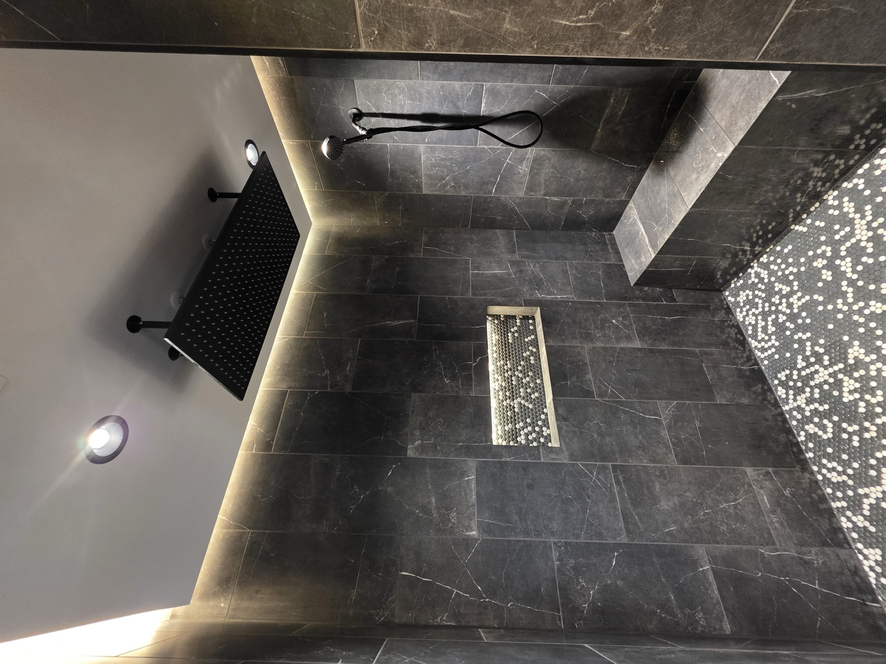

PSI Construction · Kingston & Wilkes-Barre, PA
Bathroom Remodeling Contractor — Full Baths, Walk-In Showers & Primary Suites
Bathrooms fail at the waterproofing, years later, where you can't see it. So that is where we spend the care — substrate, membrane, slope — before a single tile goes on. The finish is the part you see; the part you don't is why it lasts.
How it goes
How we build a bathroom
-
1
Plan & select
Layout, fixtures, tile and lighting chosen together so they fit each other and the room.
We measure, look at the structure and plumbing, and plan the layout: whether the fixtures stay where they are or move, how a shower can be enlarged, where storage goes. Tile, fixtures, vanity, lighting and glass are chosen together so the finishes work with each other and with the room. You see it drawn and priced before demolition.
-
2
Demolition
Down to the studs where needed; the floor rebuilt from the structure if it has to carry tile.
Fixtures, tile and finishes come out, usually to the studs. The subfloor is checked and rebuilt where it is soft or where it will carry tile; framing is corrected for the new layout. Old water damage — the kind that hides behind tub surrounds — is found and fixed now.
-
3
Rough-in
Supply, drain and electrical moved to the new plan, inspected.
Supply and drain lines are moved for the new layout, a new shower valve and drain are set, and electrical is run for lighting, exhaust fan, outlets and heated floor if you want one. Everything is pressure-tested and inspected before the walls close.
-
4
Waterproof
Cement board, membrane, every seam and corner sealed before tile.
Cement board on walls and floor, a waterproofing membrane over all of it, seams and corners sealed, the shower pan pre-sloped and flood-tested. This is the stage that decides whether the bathroom lasts; it is the one we are slowest on.
-
5
Tile & set
Floor, walls, niche, shower base pitched to the drain. Tub or shower set.
Floor and wall tile set to a layout we plan with you — no slivers at the edges, grout lines that line up, the niche centred. The shower floor is pitched to the drain. Tub or shower base set and connected.
-
6
Fixtures & finish
Vanity, glass, fixtures, mirror, lighting, paint.
Vanity and counter, toilet, faucets and shower trim, frameless or framed glass, mirror, lighting, exhaust fan, accessories, paint and trim. Grout sealed, everything caulked, and a walk-through with you before we call it done.
Work we’ve done
From our jobs
Swipe through the photographs. Tap one to see the whole job, start to finish.
Bathroom remodeling in Kingston & Wilkes-Barre
We work in Kingston, Wilkes-Barre, Forty Fort, Wyoming, West Pittston, Exeter, Swoyersville, Luzerne, Edwardsville, Plymouth, Nanticoke, Plains, Pittston, Dallas, Shavertown, Trucksville, Mountain Top, Hanover Township and Scranton.
570-338-8PSI (774)Can you turn a tub into a walk-in shower?
Yes. It is one of the most common jobs we do. The tub comes out, the floor and walls are rebuilt and waterproofed, and the shower is built with a pre-sloped pan, a proper drain, and a niche or bench if you want one.
How do you stop a new shower from leaking?
Cement board, a waterproofing membrane over every wall and the floor, every seam and corner sealed, and the shower pan flood-tested before any tile is set. It is the slowest stage of the job on purpose.
Do you handle the plumbing and electrical?
Yes. Supply and drain lines, the shower valve, lighting, the exhaust fan and a heated floor if you want one are all part of the same contract, inspected before the walls close.
Do you pull the permits?
Yes. We pull the permits, deal with the township and book the inspections as part of the job, so you are not chasing paperwork while the work is running.
What areas do you serve?
Our office is at 190 Wyoming Street in Wilkes-Barre. We take bathroom work across Luzerne County and into Lackawanna County — Kingston, Wilkes-Barre, Forty Fort, Wyoming, West Pittston, Pittston, the Back Mountain, Mountain Top, Nanticoke and Scranton.
Are you licensed and insured?
PSI Construction, LLC is a registered Pennsylvania home improvement contractor, PA HIC #213035, and carries insurance for the work we do.
Get a quote
Tell us about your bathroom project
A few multiple-choice questions so we show up already knowing the job. Every one has a “not sure yet” option. Or call — 570-338-8PSI (774).